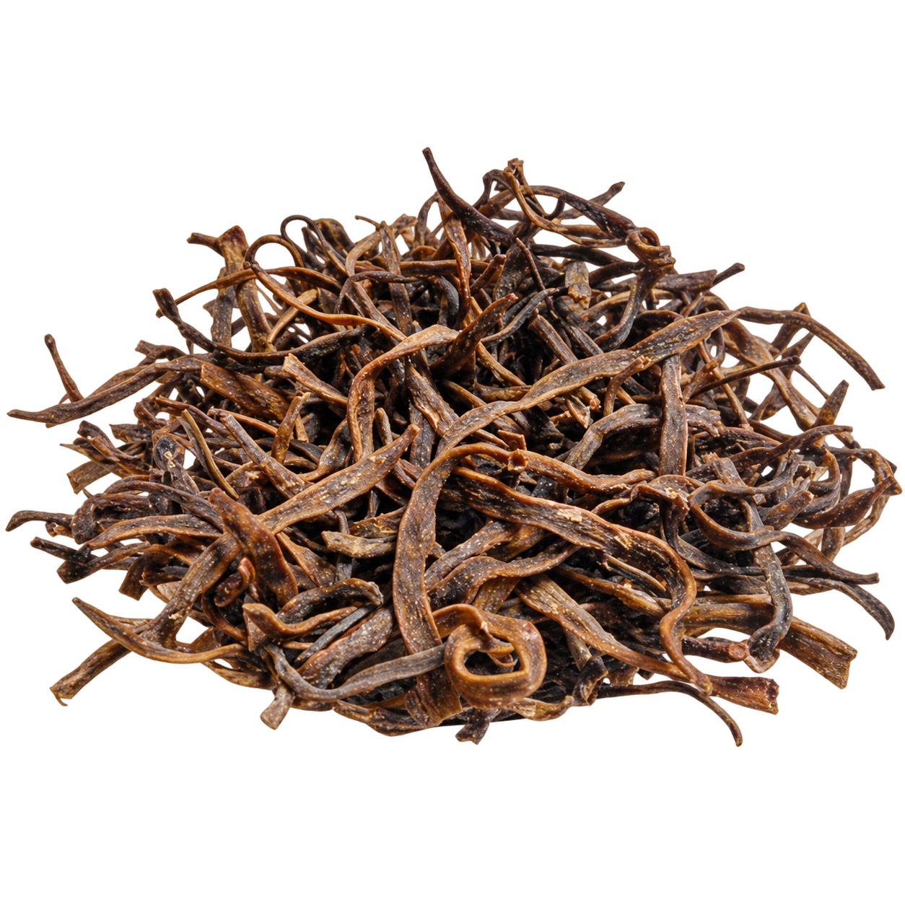

What is Sangri?
Sangri or Sangari refers to the dried pod of the Khejri tree, Prosopis cineraria. The long, slender pods are a familiar Rajasthani ingredient and are usually prepared in water before they go into the pan.

Rajasthan special • dried Khejri pod
Sangri, also called Sangari, is the dried slender pod of the Khejri tree. It is prepared before cooking, then used with Ker in Ker Sangri or in a dry Rajasthani sabzi.
Know the ingredient
Sangri or Sangari refers to the dried pod of the Khejri tree, Prosopis cineraria. The long, slender pods are a familiar Rajasthani ingredient and are usually prepared in water before they go into the pan.
Ker Sangri is the familiar Rajasthani dry sabzi built around two main ingredients: Ker berries and Sangri pods. Sangri itself is not the same thing as Ker Sangri.
Panchkutta or Panchkuta is a separate five-ingredient Rajasthani preparation. Sangri can be one of its components, along with Ker and other dried ingredients that vary by household and recipe.
Dried Sangri cooking guide
Dried Sangri is not ready to go straight into the final sabzi. Rinsing, soaking and cooking it until tender helps it take on the masala in the finished preparation.
Preparation time can vary with the dryness and age of a batch; follow the recipe in front of you and cook until the Sangri is properly tender.
Ker Sangri: cook prepared Sangri with prepared Ker and a dry Rajasthani masala base.
Dry sabzi: finish the prepared pods in oil with spices, keeping the final dish dry rather than watery.
Panchkutta: use Sangri only as the recipe specifies, alongside the other dried components.
With roti: serve a dry Sangri preparation as part of a Rajasthan-style meal with bajra roti or phulka.
Sangri is also written and searched as Sangari, dry Sangri, dried Sangri, Rajasthan Sangri, Rajasthani Sangri, Khejri pods, Ker Sangri Sangri and Sangri beans. The ingredient remains the dried pod; the recipe tells you how it is being used.
Keep dried Sangri away from moisture. Once the final MarwarMade pack is available, transfer opened contents to a clean, airtight container and store it in a cool, dry cupboard. Always use a dry spoon or dry hand when handling it.
No. Sangri is the dried pod of the Khejri tree. Ker is a dried desert berry. Ker Sangri brings the two together in one preparation.
No. Ker Sangri is the finished dish or preparation. Sangri is one of its two main ingredients.
It is generally rinsed, soaked and cooked until tender first. Use the method specified by your Sangri recipe before adding it to the final dish.
Yes. Use prepared Sangri in a dry sabzi recipe if the recipe calls for it. Ker Sangri specifically uses both ingredients.
It is commonly used in dry Rajasthani preparations with Ker and spices, and served alongside bajra roti or other Indian breads.